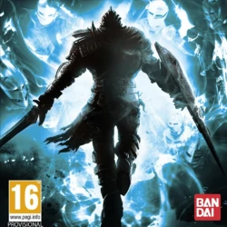
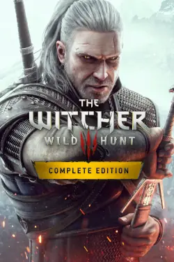
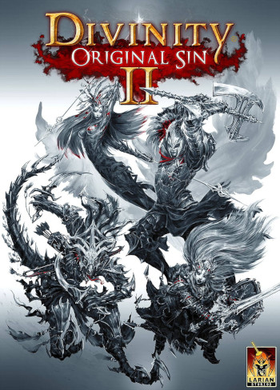

Meus Jogos Favoritos
Aqui vai o meu top 3 jogos favoritos.
OBS: Esta é uma lista completamente pessoal. Não desejo impor regra e tudo é com base na minha experiência, sinta-se livre para discordar e expor a sua opinião desde que não a ofenda ninguém.
TOP 3
Dark Souls
Dark Souls é um jogo inesquecível, a primeira vez pode parecer frustante, mas se você insiste e continua jogando percebe que o game é maravilhoso. A música, história, boss fights e a filosofia do jogo é incrível! O jogo também me lembra um dos meus mangá favorito que é Berserk e por isso merece o meu top 3.
Top 2
The Witcher 3
The Witcher é um jogo especial para mim, foi através dele que começei a me interessar por jogos RPG'S. O melhor de tudo é que eu não sabia nada sobre o jogo, joguei sem espectativas e me deparei com uma obra de arte! O jogo é absurdo em todos os sentidos com excessão da jogabilidade, nisso a CD Projeckt não acertou muito, mas a qualidade da história, narrativa, música, personagens e adaptação dos livros é tão boa que você esquece a jogabilidade do jogo!
Top 1
Divinity Original Sin 2
Esse é sem palavras, eu não tinha nenhuma espectativa nesse jogo, nunca me interessei por RPG isométrico e achava muito complicado de entender o jogo (mesmo nunca tendo jogado), quando baixei o game e começei a jogar, me surpreendi com absolutamente TUDO do jogo, expecialmente o combate e a liberdade que o jogo te da pra resolver um problema!